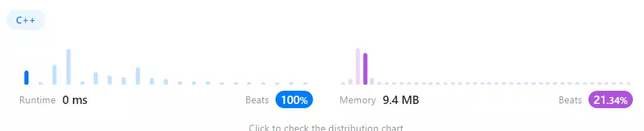

好久沒有寫 code 了，趁年節期間回憶一下 C++，結果一路上我各種忘記宣告、分號，看來是 Python 中毒了
題目概述
輸入：一個含有 1 ~ 100 個字串的 vector
輸出：vector 中最長的 common prefix string
例如：
1
2
Input: strs = ["flower","flow","flight"]
Output: "fl"
我的做法
一開始我很不想使用雙層迴圈來寫，結果執行時間意外的短？
 本題的 LeetCode 成績單
我的想法非常簡單，把每一個字串抓出來跟第一個字串比對
從第一個字比對到最後一個字，只要一有不符合的就跳出迴圈，並記錄長度。
1
2
3
4
5
6
7
8
9
10
11
12
13
14
15
16
17
18
19
20
21
22
23
24
class Solution {
public:
string longestCommonPrefix(vector<string>& strs) {
int biggestCommon = INT_MAX;
int commonCount = -1;
for (auto it : strs){
commonCount = -1;
for (int i = 0; i < it.length(); i++){
if (it[i] == strs[0][i])
commonCount++;
else
break;
}
if (commonCount < biggestCommon)
biggestCommon = commonCount;
if(biggestCommon == -1)
return "";
}
return strs[0].substr(0, biggestCommon + 1);
}
};
這裡使用到我以前沒使用過的 range-based loop ，有點像 Python 裡的 for it in strs
要寫成這樣的迴圈重點就是那個 :
在我的程式碼中 it 會遍歷strs中的每個 string ， 而裡面的迴圈會比對 it 裡的每一個字是否和 strs[0] 中相同。
而 auto 這個東西就有點像是 js 中的 var, let 一樣，不用特別指定型別是 int 還是 vector <int> :: iterator ，只要有使用 = 來給定值就可以免去宣告型別的麻煩。
至於型別的部分會交由編譯器去判斷，所以並不會影響實際執行的結果。
例如：
1
2
3
4
5
// 也就是 int x = 1;
auto x = 1;
// 也就是 double y = sin(1.3);
auto y = sin(1.3);
結語
很適合剛學 C++ 的人來寫這題，理解一下迴圈和字串是什麼。